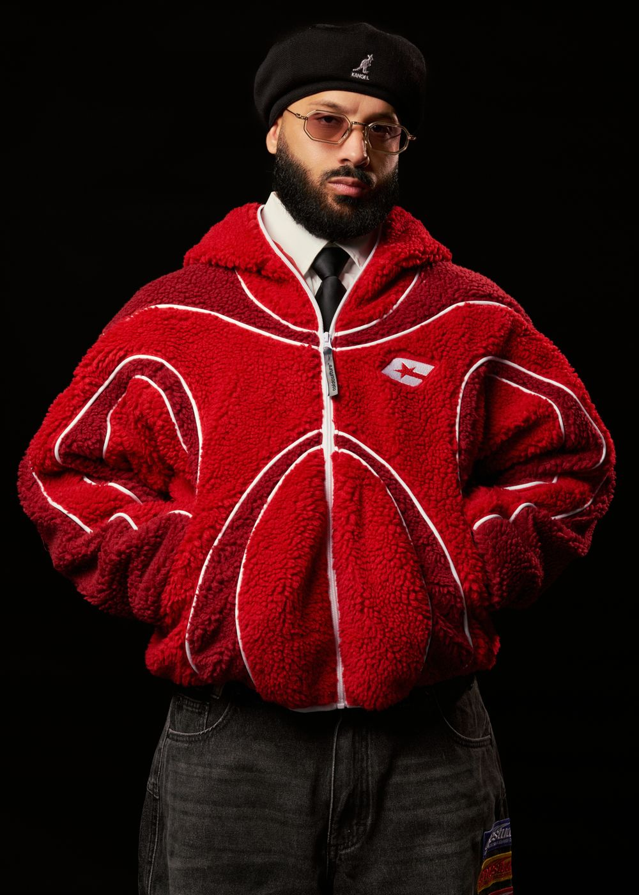
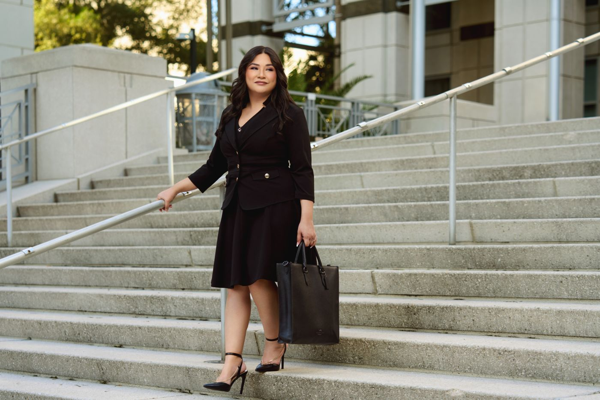

Fotógrafo en Orlando, FL
Tu fotógrafo en Orlando, en tu idioma.
Soy Gerson, fotógrafo latino en Orlando con más de 8 años de experiencia. Trabajo con dueños de negocio, profesionales, artistas y empresas que quieren fotos a la altura de lo que hacen, y toda la sesión puede ser en español.
Servicios
¿Qué necesitas?
Cada proyecto empieza con una llamada gratis. Me cuentas para qué son las fotos y armamos el plan juntos.
Fotos para tu negocio
Una sesión de marca personal con fotos para tu web, Instagram, Facebook y WhatsApp Business.
Una foto profesional
Headshots para LinkedIn, tu empresa, tus tarjetas de realtor o tu perfil de actor.
Tu próximo lanzamiento
Portada, fotos de prensa y contenido para promocionar tu música.
Tu evento
Conferencias, galas y fiestas de empresa, cubiertas en español y en inglés.
Trabajo reciente
Un poco de lo que hago.
 La elegida
La elegida




Con quién trabajo
Gente que atiende a la comunidad y quiere verse como se merece.
- Dueños de negocio latinosMarca personal
- Realtors y agentes de segurosHeadshots y marca
- Abogados, médicos y consultoresFotos profesionales
- Artistas y productoresPortadas y prensa
- Empresas y organizacionesEquipos y eventos
Cómo funciona
Cuatro pasos, sin complicaciones.
1. Hablamos
Una llamada gratis de unos minutos. Me cuentas qué necesitas y para cuándo.
2. Planeamos
Te mando la cotización y armamos juntos el lugar, la ropa y las fotos que no pueden faltar.
3. La sesión
Yo te dirijo todo el tiempo. No necesitas saber posar.
4. Tus fotos
Las recibes en una galería privada, listas para usar donde las necesites.
Reseñas en Google · 5.0 ★
Lo que dicen los clientes.
“He took the time to understand my brand, my vision, and the message I wanted to communicate through my photos. He doesn’t just take pictures. He helps bring your brand to life through powerful visual storytelling.”
“I needed a branding photo shoot for my real estate business, he offered valuable guidance and secured an excellent studio for us. He is very professional and very attentive to every detail.”
“GLPX Studio is hands down the best photographer in Orlando. Their eye for detail, lighting, and storytelling is on another level.”
Preguntas frecuentes
Lo que más me preguntan.
¿Toda la sesión es en español?
Sí, de principio a fin: la llamada para planear, la dirección durante las fotos y la entrega. Si tu equipo o tus invitados hablan inglés, también lo manejo sin problema.
¿Cuánto cuesta?
Depende de lo que necesites: cuántas personas, cuántos cambios de ropa, el lugar y cuántas fotos editadas. Agenda una llamada gratis y te mando la cotización en menos de 24 horas.
¿Dónde son las sesiones?
En un estudio rentado en Orlando o en exteriores: tu oficina, tu negocio o una calle del centro. También voy a Kissimmee, Winter Park, Lake Nona, Dr. Phillips y el resto de la Florida Central.
¿Cómo aparto la fecha?
Con un depósito del 50 %. El resto se paga el día de la sesión.
Más servicios
Siguiente paso